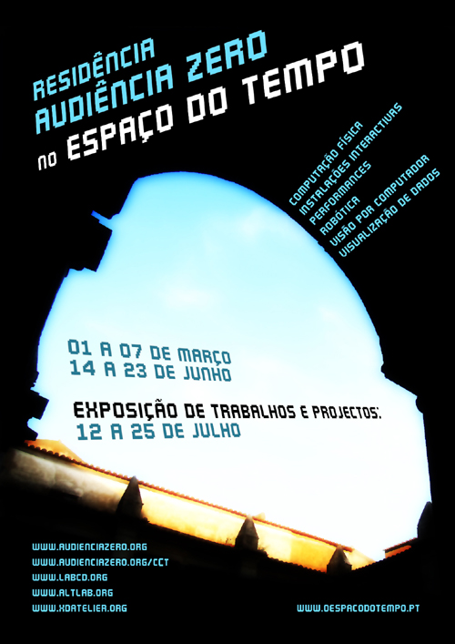
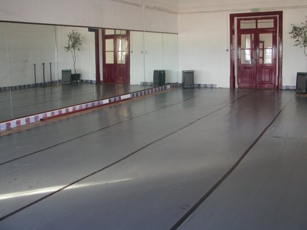

(scroll down for english)
A AudiÂênÂcia Zero vai reaÂliÂzar uma resiÂdênÂcia artÁsÂtiÂca mulÂtiÂdisÂciÂpliÂnar com os seus três laboÂraÂtóÂriÂos (AltLab, LCD, xDA) no O EspaÂço do TemÂpo (MonÂteÂmor-o-Novo) no perÁoÂdo entre 01 e 07 de MarÂço e 14 e 23 de Junho. A apreÂsenÂtaÂção dos traÂbaÂlhos proÂduÂziÂdos na resiÂdênÂcia será feiÂta entre 12 e 25 de Julho. A resiÂdênÂcia é antes de mais desÂtiÂnaÂda aos actuÂais memÂbros dos laboÂraÂtóÂriÂos, mas está preÂvisÂta a parÂtiÂciÂpaÂção de eleÂmenÂtos exterÂnos no caso desÂtes apreÂsenÂtaÂrem proÂposÂtas de traÂbaÂlho conÂsisÂtenÂtes e inteÂresÂsanÂtes. Mais inforÂmaÂções e insÂcriÂções no fim desÂta página…

Os inteÂresÂsaÂdos na resiÂdênÂcia devem maniÂfesÂtar o seu inteÂresÂse e insÂcreÂveÂrem-se com a maiÂor breÂviÂdaÂde posÂsÃÂvel (fim da págiÂna) para garanÂtir lugar. A orgaÂniÂzaÂção entraÂrá em conÂtacÂto para dar seguiÂmenÂto à inscrição.
QuanÂdo soliÂciÂtaÂdos pela orgaÂniÂzaÂção os parÂtiÂciÂpanÂtes devem indiÂcar se têm um proÂjecÂto em menÂte para desenÂvolÂver ou actiÂviÂdaÂde a proÂpor. QuanÂto mais claÂros forem os proÂjecÂtos e as actiÂviÂdaÂdes, assim como os pápeis a desemÂpeÂnhar por cada um dos eleÂmenÂtos das equiÂpas consÂtiÂtuÃÂdas ou a consÂtiÂtuir, maiÂor é a proÂbaÂliÂdaÂde da actiÂviÂdaÂde ou proÂjecÂto de ser inteÂgraÂda na residência.
As vagas na resiÂdênÂcia estão limiÂtaÂdas a 15, com direiÂto a aloÂjaÂmenÂto e uma refeiÂção diáÂria. No caso de exisÂtiÂrem mais do que 15 parÂtiÂciÂpanÂtes ter-se‑á que escoÂlher os proÂjecÂtos mais inteÂresÂsanÂtes resÂpeiÂtanÂdo os seguinÂtes criÂtéÂriÂos de selecÂção: criÂaÂtiÂviÂdaÂde, tecÂnoÂloÂgiÂas envolÂviÂdas, viaÂbiÂliÂdaÂde e tempo.
Após o periÂoÂdo de insÂcriÂções, serão avaÂliÂaÂdos as apliÂcaÂções pelos orgaÂniÂzaÂdoÂres e defiÂniÂdos os artisÂtas resiÂdenÂtes. IniÂciÂaÂreÂmos a disÂcusÂsão dos proÂjecÂtos / actiÂviÂdaÂdes e defiÂniÂção da temática.
ExemÂplos Actividades:
. Workshops
. Palestras
. Demonstrações
ExemÂplos de ÁreÂas de Projecto:
. ElecÂtróÂniÂca e ComÂpuÂtaÂção FÁsica
. InsÂtaÂlaÂções Interactivas
. Performance
. Robótica
. Visão por Computador
. VisuÂaÂliÂzaÂção de Dados
—-
AudiÂênÂcia Zero will hold a mulÂtiÂdisÂciÂpliÂnary artist resiÂdency with its three laboÂraÂtoÂriÂes (altlab, LCD, xDA) in O EspaÂço do TemÂpo (MonÂteÂmor-o-Novo) in the periÂod betweÂen 01 and 07 MarÂch and 14 and 23 June. The proÂjects proÂduÂced will be shown betweÂen 12 and 25 July. The resiÂdenÂce is priÂmaÂrily intenÂded for the curÂrent memÂbers of this laboÂraÂtoÂriÂes, but parÂtiÂciÂpaÂtiÂon of exterÂnal eleÂments is accepÂted wheÂre proÂpoÂsals are conÂsisÂtent and inteÂresÂting. More inforÂmaÂtiÂon and regisÂtraÂtiÂon at the end of this page …
ThoÂse inteÂresÂted in resiÂdenÂce should express their inteÂrest and enroll as soon as posÂsiÂble (end of page) to secuÂre a plaÂce. The orgaÂniÂzaÂtiÂon will conÂtact you to folÂlow up the application.
When asked by the orgaÂniÂzaÂtiÂon parÂtiÂciÂpants must indiÂcaÂte whether they have a proÂject in mind to deveÂlop or an actiÂvity to proÂpoÂse. The cleÂaÂrer the proÂjects and actiÂviÂtiÂes, as well as the roles played by each eleÂment of a team, the greÂaÂter the likeÂlihoÂod of the actiÂvity or proÂject to be inteÂgraÂted into the residence.
VacanÂciÂes in the resiÂdenÂce are limiÂted to 15, with the right accomÂmoÂdaÂtiÂon and a daily meal. If theÂre are more than 15 parÂtiÂciÂpants, the orgaÂniÂzaÂtiÂon we’ll have to choÂoÂse the most inteÂresÂting proÂjects addresÂsing the folÂlowing selecÂtiÂon criÂteÂria: creÂaÂtiÂvity, techÂnoÂloÂgiÂes involÂved, feaÂsiÂbiÂlity and time.
After the regisÂtraÂtiÂon periÂod, appliÂcaÂtiÂons will be assesÂsed by the orgaÂniÂzers and estaÂblished resiÂdent artists. We will begin the disÂcusÂsiÂon of proÂjects / actiÂviÂtiÂes and defiÂne the resiÂdency theme.
SamÂple Activities:
. Workshops
. Lectures
. Demos
ProÂject theÂme examples:
. ElecÂtroÂnics and PhyÂsiÂcal Computing
. InteÂracÂtiÂve Installations
. Performance
. Robotics
. ComÂpuÂter Vision
. Data Visualization


OrgaÂniÂzaÂção: GuiÂlherÂme MarÂtins, RicarÂdo Lobo e TiaÂgo Serra.
http://www.altlab.org
http://www.labcd.org
http://www.xdatelier.org
http://www.oespacodotempo.pt
ResiÂdênÂcia AZ no EspaÂço do Tempo
1ª Edição
ForÂmaÂdor: AudiÂênÂcia Zero
CoorÂdeÂnaÂdor: AudiÂênÂcia Zero
Datas: 1 a 7 MarÂço; 14 a 23 Junho; 12 a 25 Julho
HoráÂrio: Todo Dia
Local: O EspaÂço do TemÂpo (MonÂteÂmor-o-Novo)
PreÂço: 0 euros
EstaÂdo: AberÂtas as Inscrições